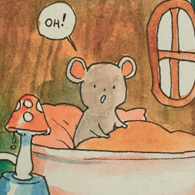

Gena Soh Yue Lin
Journalist at The Straits Times and a Rackateer otherwise
I'm a little complicated as a person but I love using my x-ray eyes to perceive and profile the people that I love. Writing as a profession is deeply rewarding to me and being a journalist allows me to make a living doing what I love.
I also enjoy learning and reading. I have a list of books that I've read in 2022 which you can see here. My top three books of the year are also listed below. Other hobbies I have include
using Twitter to release the pressure of my Mega-Mind Thoughts that otherwise pummel against my goofy eyeballs and bring me much grief (from being so smart and not having anywhere for my thoughts to go)
and also, I live in Singapore and used to be considered a little bit of a writer, but have been suffering from a persistently dyspeptic spell of writer's block. But like my approach to many problems, I hope that if I look away from them, take a
walk like June Huh who won the latest Field's Medal, I'll be able to circle back around and miraculously cure my muteness.
You may contact me on Twitter, Facebook, or you can email me some fan mail.
Gena's Table of Takes
| Thing |
Gena's Opinion |
| Noodles |
Only thing I like reliably, but this opinion only applies to noodles that are yellow. So, pasta yes, dan dan mian, yes, rice noodles in pho, maybe. |
| Dating |
Isn't it wild that the second thing I thought about after noodles is dating? Is dating like eating the same pulled noodles in Lisbon for Seven Day Adventist straight because I did not want to risk my tongue curling up instinctively
against the taste of Gazpacho? What's wrong with you Gena? But even though it hurts sometimes, I think I would give it a solid 7. Reliable enjoyment even when it sucks. The best memories are made with other people you are stupidly in love
with. |
| Animals |
I don't know... Do you like pets or should I kill you?
I suppose I am quite "loose" with what I'd consider a suitable domestic companion. I consider most living things suitable for companionship, including Diatoms or Eukaryotes and (exo)skeletals, furry or scaled. My only request is for
conventional six-legged 'vermin', read Cucaracha, to not be kept in a 'swarm', i.e not crawling over each other in a messy oily orgy, and I will accept it. I have unfortunately not been able to overcome this evolutionary disgust but I
really am trying. |
Separate Quickfire Takes
Annoyingly, I can't get the formatting for content in here to work. Click here for work in progress!
The three best books I read in 2022
- Entangled Life by Merlin Sheldrake
- Really enjoyed this book for its poetic rendering of mycelial life and how mushrooms and the way they organise can inform us of an alternate model of how we, humans, could organise.
- While the book is not explicitly political, it would be interesting to consider how humans would behave if we were more like mushrooms. For instance, considering an individual human being only as the incidental fruiting body of an
underground mycelium.
- I liked how mushrooms were self-sacrificial without even perceiving themselves as self-sacrificial. Such practices are observed in other cooperating unicellular organisms like amoeba
- The Autobiography of Malcolm X by Alex Haley
- I was completely absorbed by this book. As a Singaporean, I've only ever really known Malcolm X as a kind of mythical black separationist figure and so, possibly expected his biography to perpetuate this mythologisation.
- Instead, the book was a testimony about the journey of becoming a great man, the internal contradictions within him that was the crucible for new, great, unexpected changes in his life.
- Like David Foster Wallace said about Dostoevsky's characters -- being at once extremely particular to the sociopolitical environment but universal in humanity -- Malcolm X happened to be an individual any person could relate to but also
functioning as definitive archetype of what it meant to be a Black Person during segregation, and embodied the turbulent process of transformation within his life and as a society through his experience.
- Personally, as a codependent and who struggles to build a full life for themselves, Malcolm X demonstrated what a 'full human life' looked like, and showed me how the journey of becoming an individual is not one that is smooth sailing
-- it is one of road blocks, failures, pain, conflict and most of all, doubt.
- Even though I consider myself ambitious, I think I am quite a doubtful person. I look to Malcolm X's life as proof that maybe someone like me could live a full life as well.
- Also, a close runner up for the bio-pic genre probably is The Singapore Story: Memoirs of Lee Kuan Yew for obvious reasons, as a Singaporean. It is important to know your history and he speaks about himself with the language of spare
necessity and firmness. He writes about the tribulations of gaining independence and of world leaders with candor and lends his perceptive eye to readers.
- Capitalist Realism by Mark Fisher
- Honestly, this book is the de-facto book one should read if they would like to wean themselves off myths of capitalistic prosperity.
- Many of today's (2022) present trends, such as quiet quitting, four day work weeks, increasing focus on mental health, sustainability campaigning, are all spoken about with frankness and how their 'roles' in taking down capitalism. He
wrote this in 2009. Pretty spooky!
- Probably the most key essay of the book is the eponymous essay 'Capitalist Realism', which touches on how it has become impossible and blasphemous to even attempt imagining our lives without capitalist supply chains, relations, which
allow us to create things like the iPhone. Even though capitalism continues to *literally* destroy the world, with unnatural level of productivity, inhumane sweatshop conditions and of course climate change, this 'realism' that
unprecendented levels of accessibility to goods is somehow inevitable and even desirable.
- I also really liked the essay 'Everything melts into PR', and how the sprawling system of capitalism, by needing to at once confer a mirage of autonomy to workers to ensure they feel like free agents, but also actually requiring high
levels of organisation on a supply chain level, forces people into a system of self surveillance using KPIs. By these KPIs, capitalism proves to all its members that the system is highly efficient, but ask anyone you know and you'd agree
that KPIs actually create a lot of system level inefficiency due to bureaucratisation -- something that the capitalistic-democratic west accused communist command economies of. Great article.